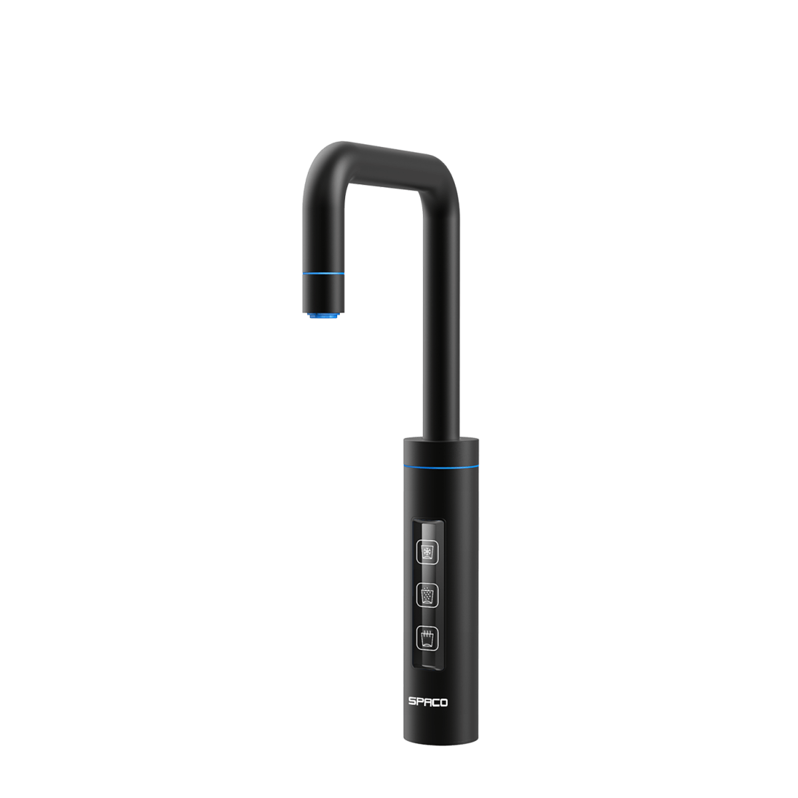

SPACO 觸控櫥下型-氣泡水冰熱飲水機 X-3 (第一代)
- 提供氣泡水、冰水、熱水三種水溫用水情境
- 標配1L氣瓶
- 一機多功能，隨按隨喝健康氣泡水
- 觸控式輕巧不鏽鋼水龍頭，時尚不占空間
- 食品級二氧化碳氣體，符合美國FDA衛生標準
- 智慧型漏水偵測，讓您永遠喝到安全高品質的水
商品內容
SPACO X-3 主機X 1
SPACO X-3 龍頭X 1
SP-600 氣泡補給600g鋼瓶 X 1
SP-300UF 機內濾心 UF複合式濾心 X 1
OMAMORI – PAP 外置濾心 淨水御守-抑垢御守濾心 X 1
商品描述
SPACO 觸控櫥下型-氣泡水UV冰熱飲水機 X-3
THE TASTE OF GALAXIES
頂級居家·吧檯氣泡水機 歐美品味人士熱銷首選
品味歐系生活的奢華飲水學
3-IN-ONE觸控全自動設計
輕按一鍵，享受氣泡水、冰水、熱水
- 最經濟的選擇，健康汽水DIY自己做
- 一支氣瓶=240瓶/500ml汽水
- 每1公升氣泡水・內含有5.8g符合美國FDA衛生標準的食品級二氧化碳氣體
- 泡茶、泡牛奶、氣泡雞尾酒、滿足所有人的健康飲水需求!
- 適合家庭、餐廳、酒吧、招待會所、辦公空間等
- 讓您在家就像住飯店，頂級氣泡水隨時款待!
兼具淨水功能的飲水機
高效能UV瞬間殺菌系統
可有效消滅水中99.9%以上的細菌
【保養及維護】
建議使用2年以上，需回原廠進行保養維護。未使用靜置1周以上，使用前請先排放水10-15分鐘，若仍有狀況需回原廠進行保養維護，靜置一個月以上可另行預約客服0800-090-881到府服務管線檢查。
商品規格
| 型號 / 品名 | X-3 氣泡水UV冰熱飲水機 |
| 功能 | 冰水 / 熱水 / 冰氣泡水 |
| 顏色 | 石墨黑 |
| 尺寸 | 23(W) x 39(D) x 39(H) 公分 |
| 出水溫度 | 冰水、氣泡水3℃ -10℃；熱水80℃ -95℃ |
| 製水量 | 氣泡水量達每小時3公升；製冷量達每小時20公升；加熱量達每小時12公升 |
| 缸體容量 | 冰水系統3公升；熱水系統1.2公升 |
| 製冰內膽 | SUS-304(不鏽鋼) |
| 加熱內膽 | SUS-304(不鏽鋼) |
| 進排水口徑 | 1/4" |
| 電壓 | AC115V/60HZ |
| 功率 | 600Ｗ |
| 標準配件 | 機內UF複合式濾心 / 機內UV殺菌燈管 / 600g氣瓶 / 外置抑垢淨水御守濾心 |
| 龍頭內/外徑 | 26mm/50mm |
| 適用水壓 | 2kg/25psi |
| 產地 | 台灣研發 / 台灣製造 |